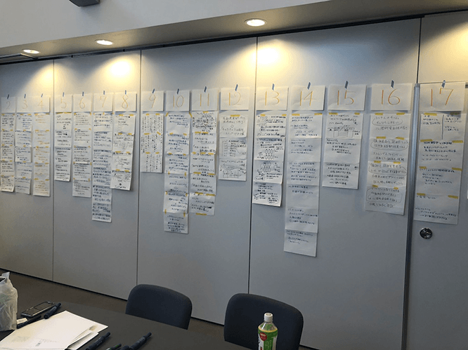
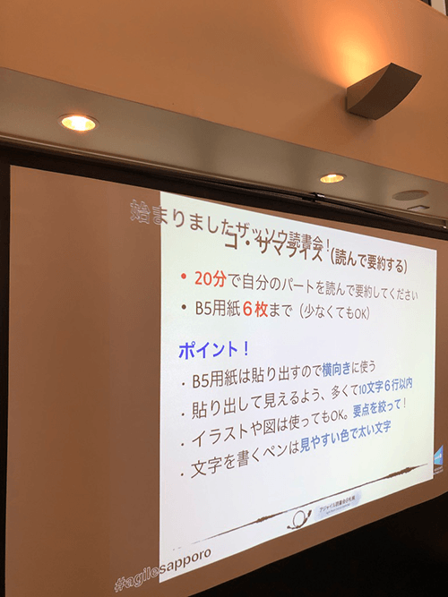
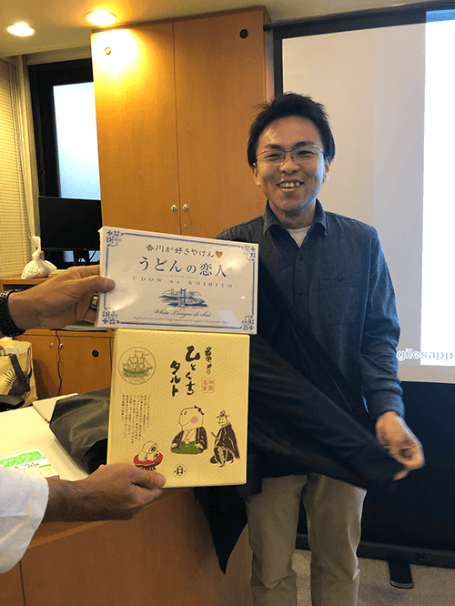
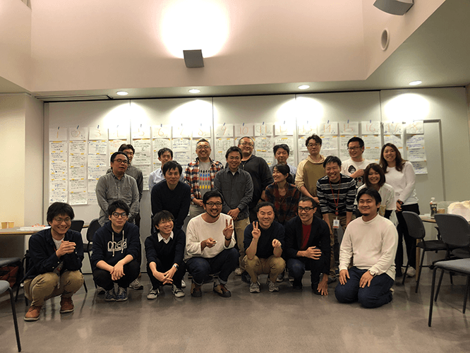

『ザッソウ 結果を出すチームの習慣』ABD&著者基調講演
2019-10-26に開催された『ザッソウ 結果を出すチームの習慣』のABD＆著者の倉貫義人さんによる基調講演 のイベントレポートです。
アクティブブックダイアローグ（ABD）
ABDは、１冊の本を参加者全員で分担して読み込み、内容をサマリーしてリレープレゼンで共有するという、わりと新しいスタイル（？）の読書会です。
詳しくはこちらの記事をどうぞ ---> 準備なし、宿題なし、購入なし、手ぶらでOKの読書会「アクティブ・ブック・ダイアローグ®」
今回の題材となった「ザッソウ本」
そして今回の題材となるザッソウ本がこちら

詳細は書籍を読んでいただくとして、書籍の「まえがき」から内容をかいつまんで言うと以下のような内容です。
- 仕事をする上での「ホウレンソウ(報告・連絡・相談)」はもちろん大切なんだけど、ただそれだけではチームのコミュニケーションが機能しなくなってきている。
- 特に働き方改革で残業が減り、それに加えて飲みニケーションや喫煙所などでの会話の機会も少なくなっている。
- 業務はますます効率化を求められ、人を成果を出すための道具としてしか見られなくなる傾向にある。
- こうしたコミュニケーションでは、やがてチームのモチベーションは下がっていってしまう。
- 人としてコミュニケーションがとれる場を、チームとして継続的に設けることが必要。
- 相談のステージは「ホウレンソウ」から「ザッソウ(雑談・相談)」へ。
- 雑談を通してメンバー同士がお互いの考えやコンテキストを共有でき、言いたいことを言い合える信頼関係をつくることでチームの心理的安全性を高める。
- そうすることで本当に困ったときにまわりのメンバーに相談するときの心理的障壁を下げることになる。
- それだけでなく、雑談から新しいアイデアやイノベーションを作り出すことに繋がる。
従来型の無駄を削ぎ落とした必要最低限のコミュニケーションではなく、チームのメンバー同士、コンテキストを含めた人間同士の信頼関係を作っていく『ザッソウ』がなぜ必要か、『ザッソウ』を取り入れることでチームにどういう変化が訪れるか、そしてそのためにはどういったアプローチがあるのかといった内容でした。
ABD実施
参加者は８〜１０ページをB4の紙４〜６枚程度に要約します。（20分）
その後、要約した紙を壁に貼り出し、リレー形式でプレゼンします。（各2分）
アジャイル札幌で実施するABDは今回で３回目で初めて参加される方もいらっしゃったのですが、要約もリレープレゼンも概ね余裕を持てていて、皆さんすばらしい発表でした。
その後、内容について気になるトピックをピックアップし、ディスカッションしました。
ディスカッションは１時間枠をとっていたので、２ターンくらいできるかと思っていたのですが、ディスカッションが盛り上がり、そのまま雑に雑談の時間へ。
このあたりがザッソウ本のABDらしく、いい時間でした。


著者：倉貫義人さんの基調講演
ABDが盛り上がったところで著者の倉貫義人さんが登場！ この日は高松から移動で札幌に来てくださいました。

ソニックガーデンの立ち上げから現在に至るまでの経緯と、そこで培った『納品のない受注開発』『リモートワーク』『管理ゼロ組織』といった組織とチーム運営のお話、そこからの今回の『ザッソウ本』という制作の背景や裏話などを講演していただきました。
感想
本やディスカッションのなかで心に残ったキーワード
『雑』というワードは本来悪い意味ではない
雑というと余計なものとか悪いイメージがなんとなくつきまとってしまうものですが、本来は「雑」というのは、たくさんのものが入っている、という多様性に富んだ状態を表すもので、それ自体は悪いものではないという話が本書の中にも書かれていました。
たしかに雑草もそうだし、雑木林、中国雑技団とか、それぞれに個があってそれらが一緒になっているということはむしろすごいことだよねというのは、いい気付きでした。
さらにはそこに含まれる背景や経緯など、今の目の前にある情報だけでは判断できないいろんな要素が含まれていて、それを知ることでコミュニケーションの誤解減ったり、信頼が生まれたりするのは、なんかこうストンと腹落ちする内容でした。
ザッソウはアジャイルなコミュニケーション
ザッソウは、小さなフィードバックループを繰り返すという意味では、リリースサイクルを小さく区切り、お客様からのフィードバックを素早く得て軌道修正していくというアジャイルのアプローチそのもので、これはまさにアジャイルをコミュニケーションに当てはめたもの。
例えば何かの資料作成の場面などでも「雑だけどめちゃくちゃ早い」状態は、高速なフィードバックを生み、結果的に望ましい形にたどり着くスピードも早く、認識のズレが発生しにくいという話が印象的でした。
まとめ
- まずは解像度が荒くてもいい、雑に相談しよう！
